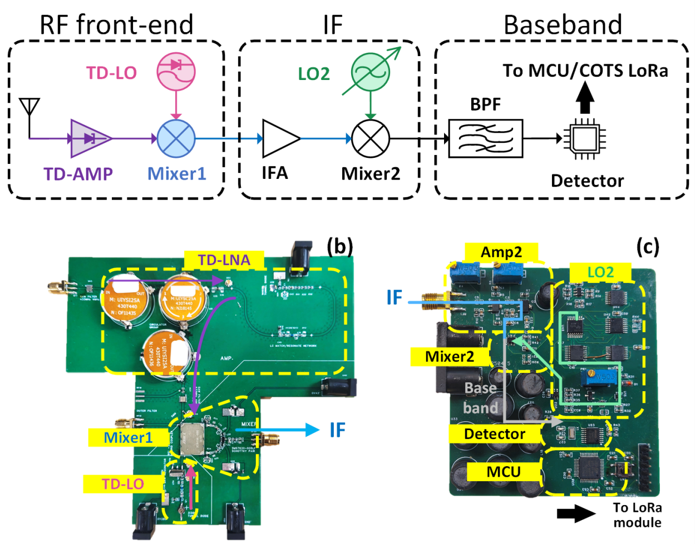
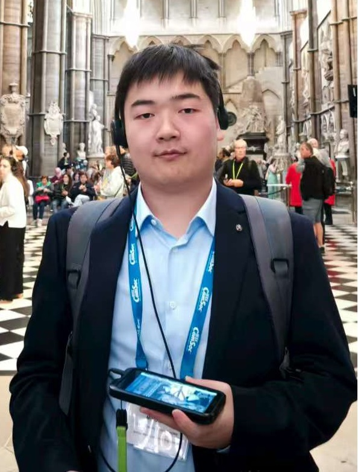
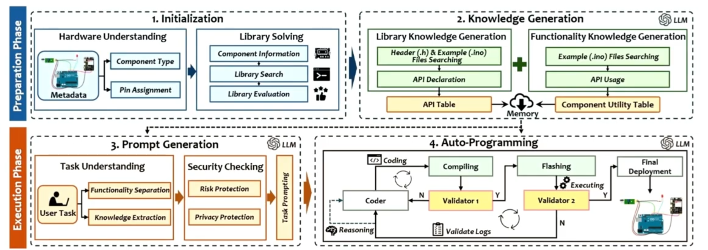
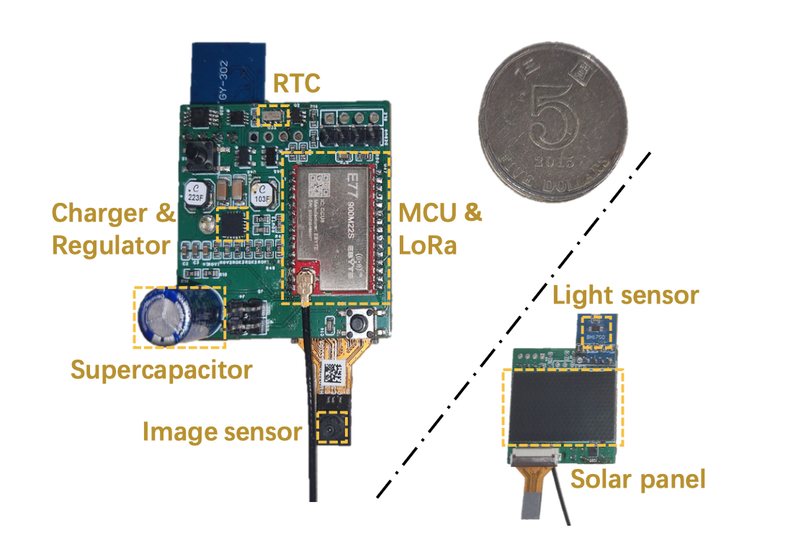

Longan: Ultra-Low-Power, Long-Range LoRa Receiver for LPWANs
Mingzhe Li, Tao Chen, Zhenjiang Li
[SenSys'26]
Just accepted. Paper will be released soon.

Ph.D Candidate
Department of Computer Science
City University of Hong Kong
I am currently a fourth-year Ph.D Student at the Department of Computer Science, City University of Hong Kong (CityU), supervised by Prof. Zhenjiang Li. Before that, I obtained my Bachelor's degree in Communication Engineering, from University of Electronic Science and Technology of China(UESTC), China in 2022.
My research interests include low-power hardware system, energy-harvesting, automatic hardware system and lightweight edge computing.

Mingzhe Li, Tao Chen, Zhenjiang Li
Just accepted. Paper will be released soon.

